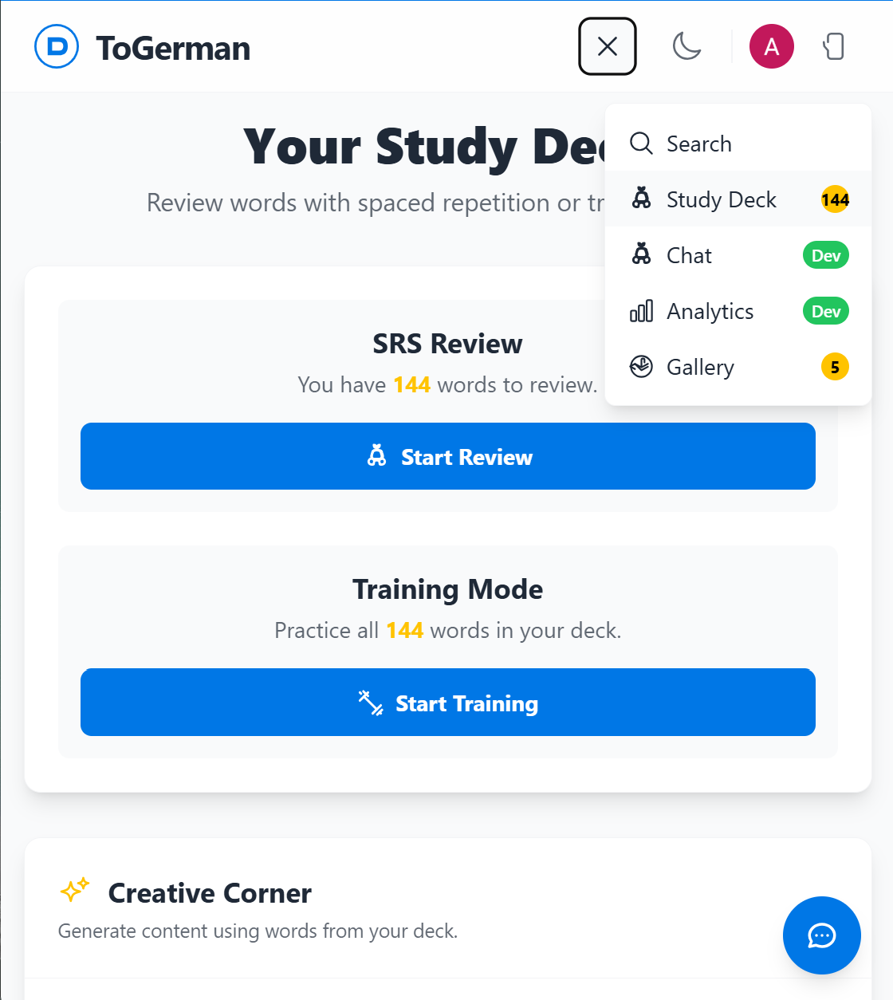
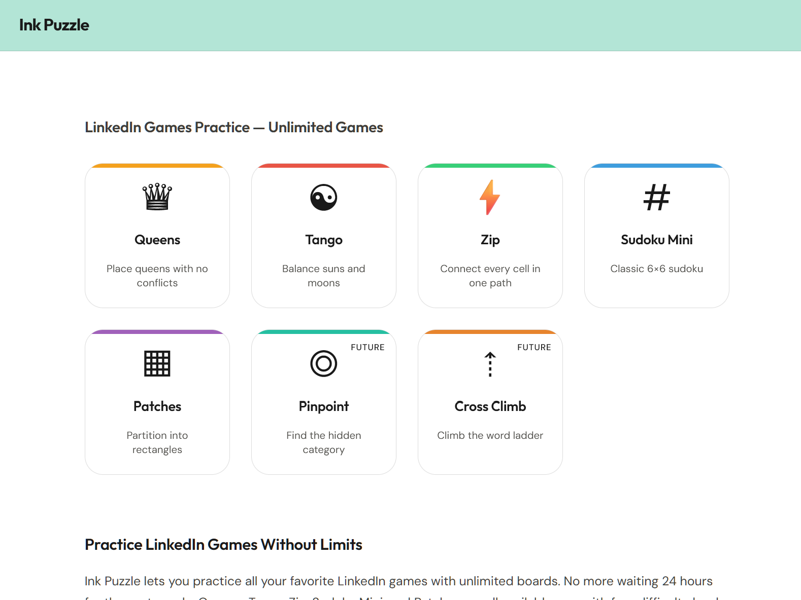

TellPDF — AI-Powered Document Assistant
A browser-based workspace with an agentic AI planner that enables interacting with documents directly in-browser, removing server-side uploads.
AI & Robotics Student • ML Engineering • Full-Stack • Generative AI
I build intelligent systems and full-stack products, bridging the gap between state-of-the-art machine learning research and real-world deployment.
A curated list of applications, pipelines, and frameworks built end-to-end.
A browser-based workspace with an agentic AI planner that enables interacting with documents directly in-browser, removing server-side uploads.

Full-stack platform integrating vocabulary lookup, spaced repetition, TTS, story generation, and conversational AI into a unified workflow.

A procedural, offline-first browser puzzle platform with multiple game modes and reproducible puzzle generation, requiring zero installs.
A lightweight markdown-based context-carrying standard to prevent session-loss in tool chains like Claude Code, Cursor, and Gemini CLI.
Deep dives into machine learning models, optimization, and evaluation frameworks.
Retrieval-augmented chatbot combining semantic search, keyword retrieval, and a fine-tuned model to help students navigate university documentation.
Built three PyTorch training pipelines and implemented GRPO (Group Relative Policy Optimization) post-training with visual similarity rewards to align plot rendering outputs.
Evaluated six frontier language models' stylistic profiles, testing text pairs in German for consistent stylistic traits across varying subject matters.
How I approach engineering, system design, and collaboration.
Building robust, production-ready AI applications from initial ideation and architecture design through deployment and operational maintenance.
Designing reliable, autonomous agent workflows utilizing data validation, schema repair, and retrieval architectures (RAG) to solve complex workflows.
Writing performant, type-safe frontend and backend code across TypeScript, Python, React, Flask, and serverless architectures.
Collaborating closely with domain experts and stakeholders to build solutions with measurable impact (e.g. automating a 2-week workflow down to 5 minutes).
I'm always open to discussing research collaborations, software roles, or innovative AI applications.